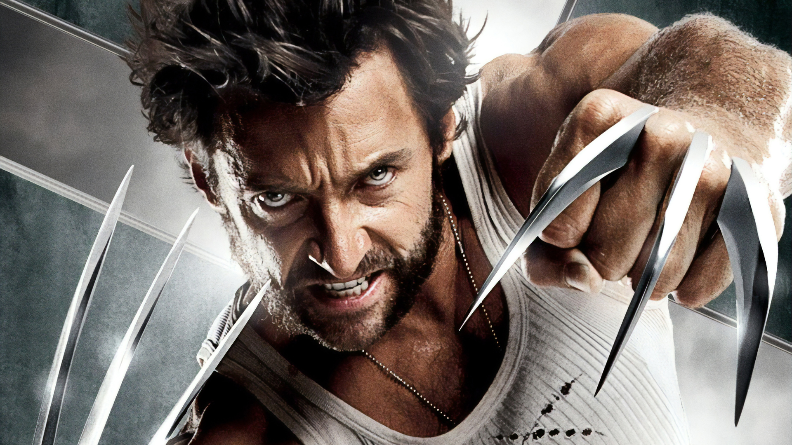

The character was created for Marvel Comics by writer Len Wein and artist John Romita, Sr. Wolverine—who possesses razor-sharp claws, the ability to rapidly heal virtually any injury, and a skeleton reinforced with an indestructible metal—made his first full appearance in The Incredible Hulk no. 181 (1974).
